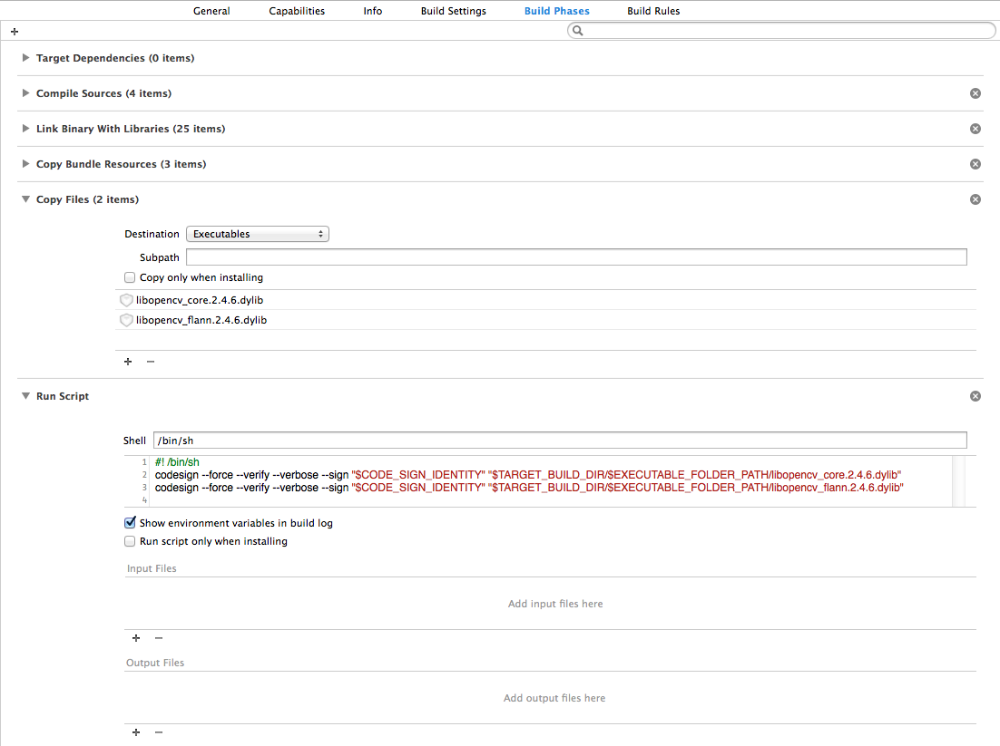
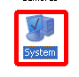
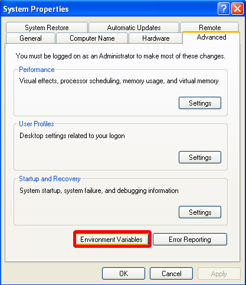
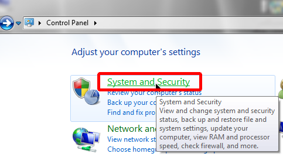
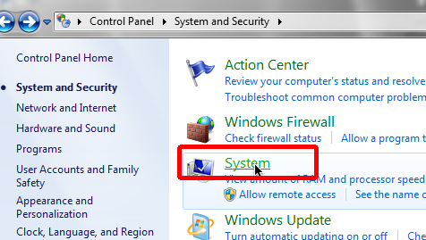
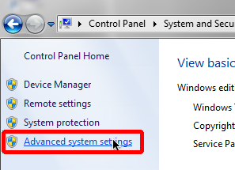
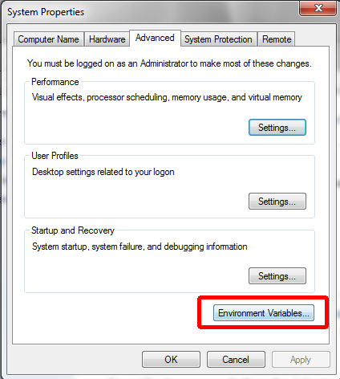

ARToolKit v2.x and ARToolKit v5.x, while sharing a small subset of features, are vastly different. The latter represents nearly 8 years of further development of the former.
As well as obvious feature differences, the changes cover a wide variety of less obvious areas, including fundamental algorithms, internal design (modularity, reuse), optimization, external API design, connections to third-party systems, documentation and developer experience
Natural feature tracking is a major feature present in ARToolKit v5.x that is not present in v2.x
The ARToolKit distribution is supplied as pre-built binaries for each platform, plus source code for most of the SDK libraries and utilities, full source for the examples, and documentation.
You, of course, are always welcome to clone the source code and build it yourself, as well.
Run the ARToolKit installer executable and follow the prompts.
By default, ARToolKit will be installed into a folder inside your Program Files folder. Start menu items are created to allow you to quickly open the folder containing the installed software, to open a command-line prompt with the path set to this folder, and to read documentation and access this support site. The installer also automatically creates the ARTOOLKIT5_ROOT environment variable to point to your chosen install location.
If you are upgrading to a newer version, it is generally safe to install over the old version. Before upgrading, save any modifications you have made to any ARToolKit source or example code, and then run the installer. The installer will add or update new files, and remove unneeded old files.
The SDK is supplied as an archive file (.tar.gz or .zip file) which need only be unpacked to a location of your choice (we recommend ~/SDKs/). Drop the archive into your chosen location. In OS X, all you have to do is double-click the archive to unpackage it. In Linux, use the following command in your terminal:
<pre> tar xzvf ARToolKit5-bin-*.tar.gz </pre>
Once unpacked, to set the ARTOOLKIT5_ROOT so that other software can find ARToolKit, open a Terminal window, and run the script artoolkit5-setenv:
<pre> // Example assumes ARToolKit is in ~/SDKs/ cd ~/SDKs/ARToolKit5/ ./share/artoolkit5-setenv </pre>
ARToolKit includes a variety of examples demonstrating ARToolKit programming techniques. After installation, the executables for these applications can be found in the bin directory inside your ARToolKit directory. Running the simpleLight example is one of the most straight-forward ways to test that your ARToolKit installation is functioning correctly. An explanation of simpleLight, including how to run it, and its sourcecode can be found on the page ARToolKit Tutorial 1: First Simple ARToolKit Scene.
When beginning your own development, it is recommended that you create your own project outside the ARToolKit folder, and treat ARToolKit as an external SDK. However, it is also perfectly permissible to begin by modifying one or more of the example applications or source files. ARToolKit is supplied with project files for each supported platform. The project files allow you to rebuild ARToolKit from source, and act as examples of how to structure your own application builds (e.g. required link libraries).
ARToolKit includes support for loading models from the filesystem and rendering them in your scene. However, this aspect of your application is completely customizable. The support ranges from use of basic OpenGL drawing commands in some of the demos, through to high-quality rendering of a large variety of models via the OpenSceneGraph framework. Additionally, ARToolKit integrates with a wide variety of third-party rendering and game engines, including the popular Unity3D game engine via ARToolKit for Unity.
ARToolKit for iOS and Android also include loading of static Wavefront .obj files (including materials) via libEden.
The rendering method used in the example applications in ARToolKit for Desktop is as follows:
In ARToolKit for iOS, it is as follows:
In ARToolKit for Android, it is as follows:
ARToolKit calculates coordinates in a form suitable for use directly with OpenGL, and also includes support for drawing the video background via OpenGL. This support is available in two separate libraries. The recommended library for new applications is libARgsub_lite. The older libARgsub is also supported for legacy applications.
If you wish to plug in a new renderer, or write your own rendering code, any of the example applications that draws directly via OpenGL will provide a good framework for connecting your own renderer and/or model loader into the application.
OpenSceneGraph (OSG) is a high-quality open-source scene graph framework, that allows users to deal with graphics and models in an efficient, high-performance and flexible manner. ARToolKit includes a utility library, libARosg, which exposes a small portion of the OpenSceneGraph framework to allow users to perform basic tasks of model loading and rendering.
Users wishing to perform advanced techniques with OSG can connect directly to the OSG C++ API, or extend the code provided in libARosg -- we provide full source for libARosg to enable this.
ARToolworks provides either bundled pre-built OSG binaries and headers with ARToolKit, or an installer.
OpenSceneGraph comes with it's own license, similar to the LGPL license, which allows it to be linked into a closed-source commercial application if so desired. Changes to OSG itself must be published. ARToolworks publishes its binary builds of OSG, and its source code modifications freely online here.
Earlier versions of ARToolKit included an OpenVRML renderer, libARvrml. While the source code for this library is still included, this library is not actively supported, and users are encouraged to use OSG for new projects.
Although VRML is not usually associated with visually-realistic 3D content, it is flexible and well-supported by many 3D toolsets. OpenVRML provides an open-source parser and renderer for VRML97 and X3D files, including support for texturing, animation and networked content, and is supported on a variety of platforms including Windows, Mac OS X (through the Fink package manager) and Linux (through the Debian package system).
ARToolKit does not directly support DirectX. However, the core ARToolKit tracking is renderer-independent, so DirectX could be used provided you are able to perform any graphics-related tasks in your own code. Three core functions of libARgsub_lite would need to be emulated: code to convert an ARToolKit camera parameter matrix to a DirectX viewing frustum, code to convert an ARToolKit pose matrix to a DirectX modelview matrix, and code to draw the camera image as a video background (should this be required).
This page lists additional information useful when deploying an application based on ARToolKit. Deployment might mean (for example) creating an installer for users to install your application on a Windows-based PC, or submitting an OS-X application to Apple's Mac AppStore.
When deploying a standalone ARToolKit application for Windows, you must also deploy ARToolKit's dependent DLLs. Traditionally, you would create an installer for your standalone app. Your installer, along with installing your app's .exe file, also installs the required DLLs (including the Visual Studio runtimes). The Visual Studio runtimes are installed by the vc_redist.exe (or vc_redist64.exe, for 64-bit executables) application which must be run to ensure that Visual Studio runtime libraries are available in the Windows system on the user's machine. The latter is an unfortunate requirement faced by all 3rd-party software for Windows.
Once you have specified the other parts of your app which need to be installed, the required lines for an InnoSetup .iss file to install the dependencies for a 32-bit executable would be something like:
[Files]
Source: "{pf32}\redist\vcredist_x86.exe"; DestDir: "{app}"; Flags: ignoreversion
Source: "{pf32}\redist\ARvideo.dll"; DestDir: "{app}"; Flags: ignoreversion
Source: "{pf32}\redist\DSVL.dll"; DestDir: "{app}"; Flags: ignoreversion
Source: "{pf32}\redist\pthreadVC2.dll"; DestDir: "{app}"; Flags: ignoreversion
[Run]
Filename: {app}\vcredist_x86.exe; Parameters: "/install /quiet /norestart"; StatusMsg: Installing Visual Studio 2013 RunTime...
or for a 64-bit executable:
[Files]
Source: "{pf32}\redist64\vcredist_x64.exe"; DestDir: "{app}"; Flags: ignoreversion
Source: "{pf32}\redist64\ARvideo.dll"; DestDir: "{app}"; Flags: ignoreversion
Source: "{pf32}\redist64\DSVL.dll"; DestDir: "{app}"; Flags: ignoreversion
Source: "{pf32}\redist64\pthreadVC2.dll"; DestDir: "{app}"; Flags: ignoreversion
[Run]
Filename: {app}\vcredist_x64.exe; Parameters: "/install /quiet /norestart"; StatusMsg: Installing Visual Studio 2013 RunTime...
You might need to adjust the above if the path to your standalone's .exe is a subfolder of {app}.
Additionally, if you use the QuickTime support included in ARvideo, you should obtain the redistributable installer for QuickTime from Apple via Apple Developer Support.
ARToolKit Professional for OS X has dependency on some .dylibs. At the time of writing, these are the OpenCV core and flann libraries. These should be copied into your application package. When code signing your application, you will find that the .dylibs required to be bundled inside your application package need to also be code signed and that Xcode doesn't automatically do this. The easiest way to do this is to add a "Run script" build step to your build. Set things up as indicated in the following image:

Environment variables can be used to specify configuration information to software.
An environment variable can be set temporarily in a single shell, and will only affect applications launched from that shell. Once the shell is closed (e.g. on a logout or reboot) the environment variable is removed.
From a "cmd.exe" shell, use the 'set' command:
<pre> set NAME=value </pre>
The syntax varies depending on the shell you're using. First, open a Terminal window, then if using bash (default on Linux and Mac OS X) type:
<pre> NAME=VALUE; export NAME </pre> or if using csh or tcsh: <pre> setenv NAME VALUE </pre>
If you wish to retain an environment variable across shells and reboots etc., use this method:
First, open the "Environment variables" editor. Its location is a little bit hidden.
Windows XP:  
Windows 7:    
On the left hand side of the window, you will see the environment variable name, and on the right hand side the variables value. Variables can be set either just for the current user or system-wide for all users.
Windows stores system-wide environment variables in the registry, as a string under the key HKLM\\System\\CurrentControlSet\\Control\\Session Manager\\Environment
<pre> echo "NAME=VALUE; export NAME" >> ~/.profile echo "setenv NAME VALUE" >> ~/.cshrc defaults write ~/.MacOSX/environment NAME -string "VALUE"; plutil -convert xml1 ~/.MacOSX/environment.plist </pre>
The first line sets the environment for users with users with sh or bash as their shell, the second for users with csh or tcsh as their shell, and the third for programs launched by the Finder (including Xcode).